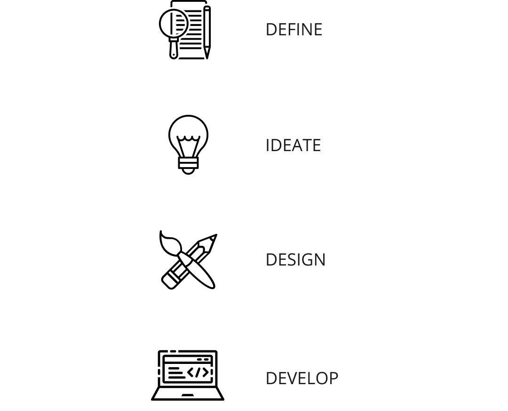
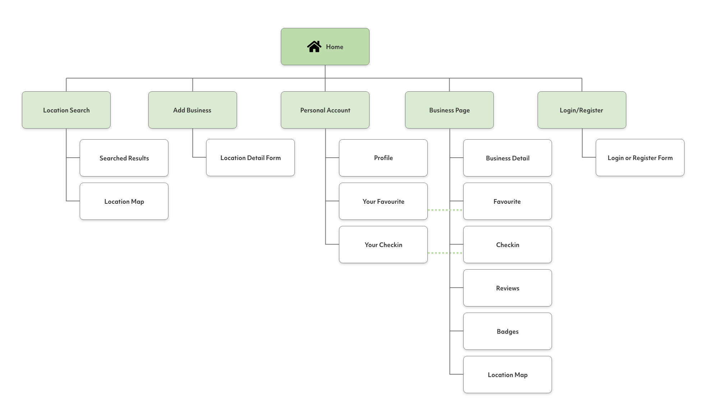
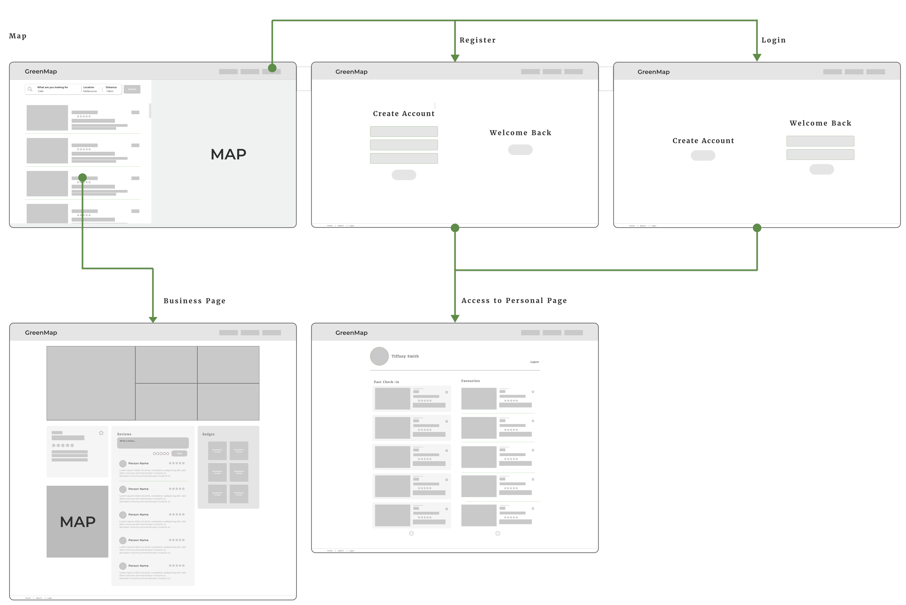

GreenMAP
Period
July - November 2020
Team Project
Number of members: 5
My Role
User Research | Interaction | Visual design | XD Prototyping | Testing | Development
Overview
For this project, we sought to create a collaborative social platform connecting everyday Australians with sustainable organisations and points of interests to help promote sustainable activities within neighbourhoods. As the information on sustainable practices is decentralised and often segregated on different websites (through different organisations/businesses/councils), the public is often left on their own to piece the information together. Our app aims to alleviate this issue by reducing the information and time cost that is associated with researching information on sustainable practices and planning how to achieve their sustainable goals. This was achieved by creating a centralised location for businesses, organisations and councils to come together and post information on their sustainable activities and places where the public may utilise to engage in sustainable activities.
Process

Define
Problem
Environmental sustainability is a global issue whereby poor practices result in unfavourable climate change that negatively impacts every living organism in the world. However, tackling the issue of climate change is often complex and a greater scientific and societal understanding of climate change is often the most effective method to address the problem. It is here that the problem statement of the project stems;
"How might we improve the accessibility of information on environmentally
sustainable practices so that we can decrease the ecological footprint of each individual?."
Product vision
The goals and aims for our application
- Centralising information on where and how the public can participate in sustainable practice to make it more convenient and accessible for people to take affirmative measures.
- Centralising information where people can easily find where they can participate in sustainable actions as well as organisations which support sustainable practices. To will reduce the tedious activity in finding information from different sources.
- By creating a community of people and organisations which members of the public can evaluate and share their experience or encounters around sustainability, to increase motivation in people to participate.
- By integrating social collaboration to assist in the expansion of information and data around sustainable resources and increasing data reliability
By implementing these solutions, our application will endeavour to increase the likelihood of which an individual will participate in sustainable actions. Thereby, combating the waste generated and redirecting them to be reused or repurposed to support the environment.

Ideate
SiteMap
We planned to have the following pages with the functionality.
Mid Fidelity Wireframes
We had a list of functionality to cover so I started to sketch different designs to detail out the user flow to discuss and share with team members to get feedback.
Design
Style Guide
To help with creating the prototype and make the development more productive, I created a style guide. This style guide contains colours, typography and UI elements (buttons, form, icon and illustrations).
High Fidelity Prototype
Map Search
The purpose of this page is to promote the exploration of local, sustainable businesses and facilities. To facilitate relevancy and efficiency for users, our site will query the user’s device for their location and generate results via proximity.
Location Page
The Business Page is a way for visitors to learn more about each location once navigated
from the maps page. This is available to both registered and unregistered users. However,
some features are only available to users who are registered and logged in.
Such as
- Adding a review
- Adding the business to your favourites
- Check-in
Profile Page
The user profile page is an area where users can access their favourites and check-in.
This provides an easy and efficient way for users to visit listings they have previously
bookmarked or visited. Users may also update their account details on this page.
Users are also able to visit other user profiles by sharing their profile URL or via
clicking on profiles in reviews.
Add Business
The add business page allows users or business owners to create location listings on
GreenMAP. A simple form is presented, and upon completion, a business listing page will
be generated for all visitors to interact with. This serves as a simple and easy method
for business or organisation owners to gain exposure and grow their customers.
Registration and Login
The registration and login page user’s will be able to register or login in their personal account. GreenMAP is designed to enable visitors regardless of registration to access our core feature. To facilitate user retention on our website and generate a feeling of community, our website promotes visitors to register on our website so that they can access more features. By registering on GreenMAP users will be able to:
- Add businesses to favourites
- Check-in to businesses
- Post Reviews
- Add New business listings
DEVELOPMENT
Technical Development Process
In terms of technical development of GreenMAP, we used Node.js for our JavaScript runtime environment. From here, the development process can be broken into two main phases, backend and frontend. For the backend server we used an Express.js framework for its ease of use in implementing a REST API and straightforward code modularization. This server is hosted on Heroku. All the data needed for the website can be generated by making calls to this backend, ensuring that all the data modification is handled through the backend for increased privacy and efficiency. All the data needed to store business, user, and review information is stored on MongoDB Atlas, which interfaces with the API calls through the mongoose.js library. Mongoose is highly similar with the typical MongoDB query syntax, which made for painless database calls. We used React to generate the frontend of our web application. As our website has a lot of similar sections, such as the lists of businesses on the map and user pages, React made it easy to generate our frontend because it is largely component based. Additionally, the state cycles and management of React was ideal for managing user input for various server requests such as login, register, search, and adding a new business.
Reflection and takeaways
Reflection
Overall, development of GreenMAP ran smoothly without significant problems considering the challenges imposed on us by the Covid-19 pandemic. Developing GreenMAP was an invaluable learning experience for the five of us to develop an application that addresses a real-world challenge. We developed skills that will allow each of us to work collaboratively in software development projects, both at university and professionally.
If there was more time
- Do more indepths research of problem with stakeholders
- Do further iterations / testings, to further improve user expernece
Takeaways
What I have learned from this project?
- How to create backend and use REACT
I was able to learn how the backend of a website operates using node.js as well as how to develop a REACT front-end. - Collaboration with developers
In this project, I learnt that collaboration and good teamwork with developers is key to smooth and easy development process.
← Previous work